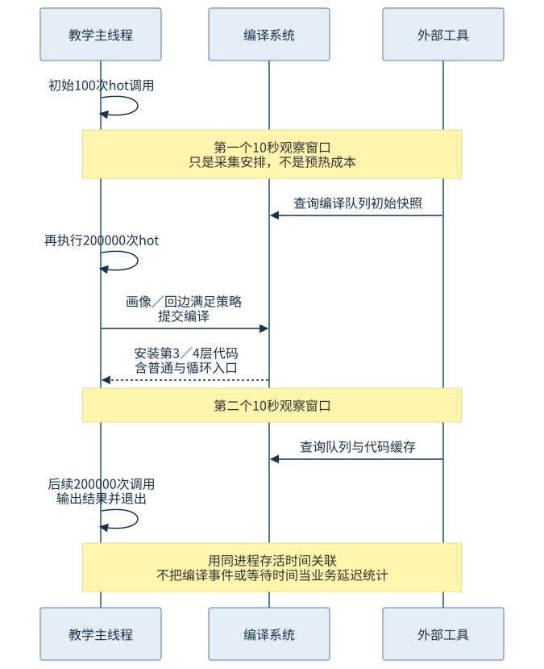

第四篇 · 执行引擎与动态编译
第 16 章 即时编译与分层执行
分层编译在当前执行收益与编译成本之间取舍。画像、队列和代码缓存共同影响何时请求、何时完成，以及新调用进入哪份代码。
从现象开始
同一个hot方法先少量执行，再重复调用，运行日志出现第3层普通代码、第4层循环代码与第4层普通代码。它没有按0、1、2、3、4逐项过关。技术基线为Java开发工具包（Java Development Kit，JDK）25.0.5.0.2、HotSpot、macOS AArch64。
16.1 即时编译的收益与成本
本节配图：CH16-F01。
16.1.1 为什么在运行时编译
即时编译（Just-in-Time Compilation，JIT）用当前已知类型、分支和调用频度决定怎样生成机器码。解释器必须重复执行通用分派，编译器则可把一段控制流、多个内联方法与数据依赖一起处理。第14章First.apply在主导类型下被内联，就是运行信息收窄目标的具体例子。
JIT不是把每条字节码机械替换成固定指令，也不是只在第一次调用前做一次工作。方法可有多个版本，循环还可有专用入口，失效后又可能重新编译。编译结果依赖编译时已知信息与预算，不能从“已进入第4层”推导所有优化已发生。
16.1.2 净收益取决于剩余运行
画像会增加执行和元数据开销，编译消耗处理器与本地工作空间，代码安装后长期占用代码缓存。若方法只再运行几次，深度优化可能无法偿还前期成本；重复运行足够多且假设稳定时，才有机会获得持续收益。
因此启动时间、预热时间与稳定阶段吞吐需要分别度量。短生命周期程序可能在深度编译完成前已退出，长服务则可能因负载改变重新预热。本章观察事件，不用一组固定调用打印为任何一项性能指标背书。
16.2 两类HotSpot编译器
本节配图：CH16-F02。
16.2.1 两类编译器承担不同预算
客户端编译器（Client Compiler，C1）倾向较快生成代码，并可按层级插入画像；服务端编译器（Server Compiler，C2）使用更多全局分析和优化预算。这里的名称是HotSpot历史命名，不表示只有桌面程序才用C1、只有服务端应用才用C2。两者在分层执行中可以协作。
本书锁定实现compilerDefinitions.hpp把0定义为解释，1为C1简单编译，2为有限画像，3为完整画像，4为完整优化。该源码还允许另一个编译接口路径，因此不能把一切环境的第4层都无条件等同本机C2；本轮日志明确标识compiler=c2。
| 层级 | 代码种类 | 主要画像目的 |
|---|---|---|
| 0 | 解释执行 | 可收集计数及方法数据 |
| 1 | C1简单编译 | 不收集同等画像 |
| 2 | C1有限画像 | 进入与回边计数 |
| 3 | C1完整画像 | 计数及类型／分支等方法数据 |
| 4 | C2完整优化 | 主要消费画像，保存恢复信息 |
16.2.2 编译代码也可以继续收集画像
第2层主要保留进入与循环计数，第3层还收集方法数据中的分支、类型等信息；简单层与深度优化层的目的不同。低层机器码使业务较快脱离解释分派，同时为更昂贵的优化积累依据。画像不是只有解释器才会产生的数据。

16.3 热点计数与运行画像
16.3.1 方法进入和循环回边回答不同问题
一个方法调用十次，每次执行千万轮循环，进入计数不大却有大量回边；另一个方法频繁调用但没有循环，热点来源不同。方法数据还可记录接收者类型和分支倾向，使编译器知道常见执行形态。计数描述频度，类型画像描述走过哪些目标，不能用一个数代替全部信息。
本例hot内有64次循环，外层重复调用也很多，日志同时出现普通编译与带百分号的循环入口。编译号是任务身份，层级是代码种类，@后的位置是循环入口的字节码位置索引（Bytecode Index，BCI）；这些列不能混读。
16.3.2 阈值由当前策略组合
锁定CompilationPolicy中的CallPredicate同时考虑进入计数、进入加回边以及缩放因子；LoopPredicate检查相应回边条件。threshold_scale使用队列规模和编译线程数量反馈，代码缓存压力也可提高部分阈值。方法专属配置还可能改变缩放。
因此一张“调用满N次必定编译”的表会漏掉层级、队列、已有版本和资源条件。即使达到请求条件，排队、去重、编译取消或失效仍会改变实际安装时点。日志中的count也不应直接当作源代码精确业务调用计数。
16.4 编译调度与层级转换
16.4.1 提交、排队、编译与安装
CompileBroker::compile_method检查请求与已有编译状态，建立或复用任务；编译线程循环取任务，再由invoke_compiler_on_method分派到编译器。策略可按方法活动、任务年龄和资源情况选择，并不保证严格按源码顺序或简单先进先出完成。

本轮LogCompilation的task_queued保留提交事件，task与task_done记录编译过程，nmethod记录安装代码。某个时刻Compiler.queue为空，只表示队列当时没有待编译任务；不能抹去之前提交和完成的历史。代码缓存快照提供容量与编译状态，也不能替代方法级时间线。
16.4.2 不要求每个方法走完全部层级
简单方法、画像已有来源、编译积压、层级限制与循环执行都能形成不同迁移。普通入口和循环入口可以同时存在；更高层循环代码也会影响后续普通入口选择。旧版本made not entrant可能只是被更新版本替代，不能仅凭该文字认定业务发生了类型陷阱。
本轮hot普通入口经过第3层和第4层，没有看到第1、2层普通版本；因此正文以实见路径说明可能性，不补画一条从0依次走到4的必经流水线。具体陷阱原因与代码状态由第18章展开。
16.5 启动、预热与稳定阶段
本节配图：CH16-F03。
16.5.1 把业务阶段放到同一时钟
TieredJourney用运行时管理接口打印进程存活毫秒，编译日志也按同进程经过时间记事件。初始只有100次hot调用；10秒工具窗口后进入200000次调用，随后又留10秒窗口，再完成后续200000次调用。结果累积到输出，避免整个计算成为无用途语句。

源程序的暂停用于外部观测，不是“预热需要10秒”的证据。两个时钟都有采集和输出延迟，关联应留意交错文本与编译线程输出，而不能按终端每行出现顺序认定所有工作串行发生。
16.5.2 稳定是负载与资源条件下的状态
后续阶段继续使用现成代码，不保证服务从此永不变化。新接收者、分支变化、类加载、代码缓存回收和资源竞争都能改变执行。若要归因延迟，应同时有请求阶段、编译活动、分配与资源证据；仅见编译日志繁忙不够。
第31章处理跨次运行画像与提前处理缓存，必须把训练成本、缓存生成、部署启动和预热分开报告。当前运行的分层编译机制不能直接推出缓存收益，更不能把缓存等同独立本地可执行文件。
证据与复做
第一轮编译和业务运行正常；初次诊断附加因沙箱权限失败，权限放开时目标已退出，失败原文保留。第二轮使用同一源码和规模、显式StartAttachListener取得两个采集窗口，具体队列与代码缓存结果见O02记录。普通入口与循环入口均按实际编译号追踪，未将快照为空解释成未编译。
回顾与边界
分析某个方法先固定身份，再区分请求与完成、普通与循环入口、层级与失效原因。要判断预热是否值得，还需单独的业务性能测量；本章只提供执行机制证据与事件关联方法。
来源
- S01：HotSpot性能说明的分层编译部分，具体实现以S02为准。
- S02：锁定compilerDefinitions.hpp、compilationPolicy.cpp、compileBroker.cpp，精确符号见索引。
- O01／O02：本章两个运行目录，含失败采集与成功接续。